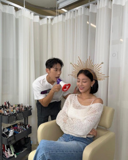

Biografia de Park Jihyo
Quem é Park Jihyo?
Park Ji-hyo, nascida em 1 de fevereiro de 1997, conhecida apenas como Jihyo, é uma cantora, compositora, dançarina e modelo sul-coreana. Ela é mais conhecida por ser integrante, Líder e Vocalista Principal do grupo feminino sul-coreano Twice.
Onde Jihyo nasceu?
Jihyo nasceu em 1 de fevereiro de 1997 em Guri, província de Gyeonggi, Coreia do Sul.
Quando se tornou traineer?
Jihyo se tornou traineer da JYP Entretaniment aos oito anos de idade.
Carreira
Atividades solos e estreia
JYP Entertainment recrutou Jihyo depois que ela participou de um concurso no Junior Naver e ficou em segundo lugar.
Ela então se juntou à JYP Entertainment como trainee aos oito anos de idade e treinou por dez anos antes de sua estreia. Durante seus anos de trainee, Jihyo era conhecida como o rosto da linha adolescente de Innisfree com o grupo masculino Boyfriend. Ela treinou com muitos ídolos da JYP, incluindo Sunmi e Hyerim de Wonder Girls, Bae Suzy do Miss A, Jo Kwon e Nichkhun do 2PM. Jihyo foi definida para estrear em um grupo feminino junta com Nayeon, Jeongyeon e Sana, mas o projeto foi cancelado.
Em vez disso, todas se juntaram ao reality show Sixteen, uma competição destinada a selecionar as integrantes fundadoras de Twice. Ela mudou legalmente seu nome para Jihyo antes da competição. Como uma das nove participantes de sucesso, ela passou a se juntar ao grupo feminino recém-formado Twice. Embora não seja a integrante mais velha do grupo, Jihyo foi mais tarde votada por suas companheiras de grupo como a líder em uma votação anônima.
Em outubro de 2015, Twice estreou oficialmente com o lançamento de seu primeiro álbum EP, The Story Begins, com o single "Like Ooh-Ahh" sendo a primeira música de estreia de K-pop a atingir 100 milhões de visualizações no YouTube.
Vida pessoal
Quando Jihyo era uma aluna da terceira série, ela participou de um concurso no Junior Naver para um papel infantil. Depois que ela ganhou o segundo lugar, ela foi procurada pela JYP Entertainment. Entrou oficialmente na empresa em 15 de julho de 2005 e foi trainee por mais de 10 anos.
Namoro com Kang Daniel
Após vários rumores de que os dois estariam se vendo desde o início do ano(2019), foi confirmado o namoro. A KONNECT Entertainment e a JYP Entertainment, empresa responsável pelo TWICE, demoraram um pouco, mas confirmaram o namoro[13]
A Dispatch, portal coreano conhecido por ser um dos maiores portais de notícias sobre idols, chegou a postar fotos em que o casal aparecia entrando no mesmo lugar, em carros diferentes.
Em 2020 Kang Daniel e Jihyo decidiram terminar seu relacionamento após 1 ano e 3 meses de namoro simplesmente por estarem muito ocupados, o que os impedia de se verem.
“Os dois idols têm seus objetivos claros. Como eles estavam focados em trabalhar seus álbuns, passaram a se encontrar cada vez menos. Parece que ambos acreditam que o trabalho é mais importante no momento”, disse uma fonte.
Rumor de namoro com Yun Sungbin
De acordo com a cobertura do Sway no dia 24/03/2023, Jihyo e Yoon Sungbin namoram há um ano. Os dois, amantes de esportes, se conheceram através de um conhecido e naturalmente se tornaram namorados.
Jihyo e Yoon Sungbin moram a 5 minutos de carro e são conhecidos por terem curtido encontros indo e voltando entre as casas um do outro. De acordo com o relato de um leitor do Sway, Yoon Sungbin foi visto indo e vindo na casa de Jihyo, e eles pareciam ser um casal natural, incluindo um relacionamento natural.
Com isso nasceu o segundo casal interno de ‘I Live Alone’. Jihyo e Yoon Seongbin aparecem regularmente no programa ‘I Live Alone’ da MBC. Seongbin Yoon foi adicionado como membro do Rainbow em junho do ano passado, e Jihyo foi adicionado como membro do Rainbow em agosto, e estão recebendo muito amor dos telespectadores.
Um funcionário da indústria do entretenimento que conhece bem os dois disse: "Jihyo e Yoon Sungbin são entusiastas de exercícios. Yoon Sungbin ensinou Jihyo a se exercitar e eles se tornaram amigos íntimos. Eles tinham muito em comum, então seu relacionamento rapidamente se transformou em um relacionamento romântico.
As empresas não confirmaram e nem negaram o rumor, e disseram que "É difícil confirmar este assunto porque é um assunto privado. Pedimos a sua compreensão.
Yun era atleta de skeleton e ganhou a medalha de ouro nos Jogos Olímpicos de Inverno de 2018. Desde 2022, ele se tornou apresentador após deixar o esporte. Ele é um dos competidores da primeira temporada do reality A Batalha dos 100, na Netflix.